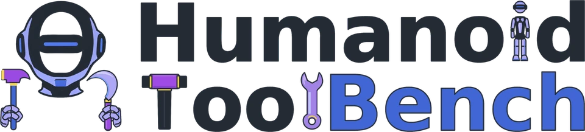
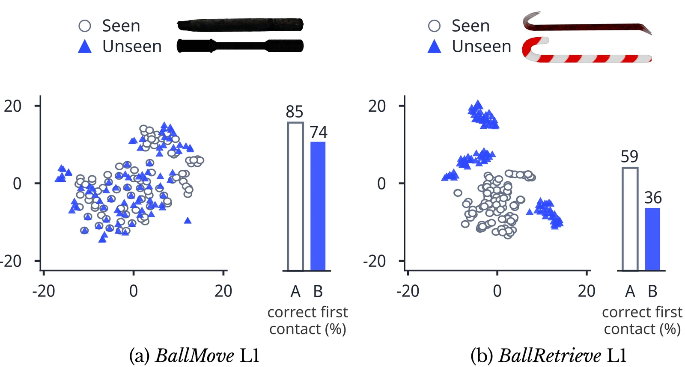
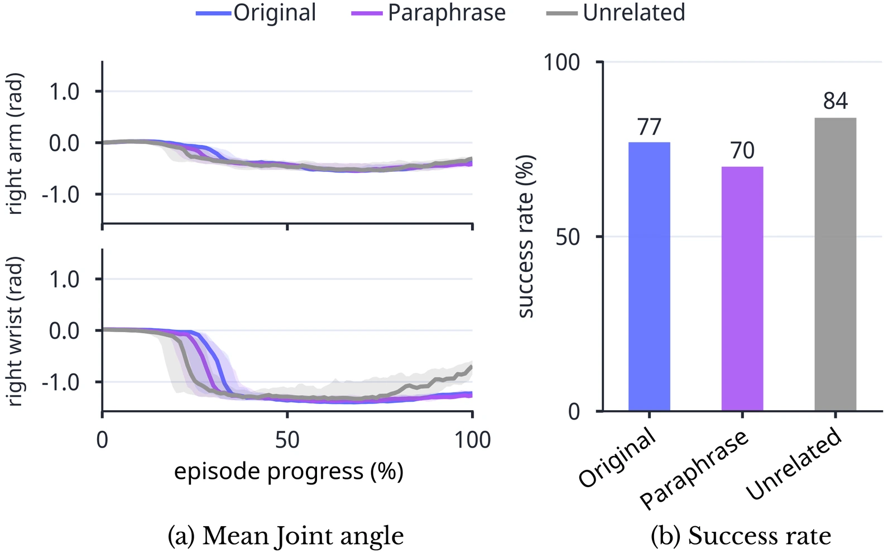
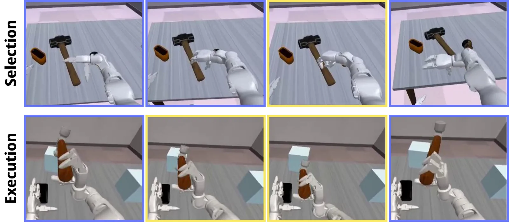

76%→9%FastWAM, BallMove, L1 to L2
Moving makes it much harder
For every policy, success falls from L1 to L2 whenever L1 success is above zero.

Benchmarking Humanoid Tool Use from Selection to Mobile Execution1Seoul National University 2University of Massachusetts Amherst 3Google Research
Three-minute overview, with narration.
Can a humanoid pick the right tool and then use it, standing still or on the move? 18 tasks, 55 tools and 3.1k human demonstrations, in simulation and on a real Unitree G1.
The tasks
It has to choose a suitable tool from the objects on the table and use it. Three scenarios, three execution levels and two tool-set modes make 18 tasks.
Each one needs a different tool function.
Shown on BallMove. The clip above is L1, stationary use, in standard mode.
Policy rollouts after fine-tuning on 91 real demonstrations, played at 1.5 to 3× speed.
Simulation clips are human demonstrations from ToolBook, seen through the robot's head camera.
R, for example G1BallMove-L1-R.Overview
Humanoids need tools to do tasks beyond their physical limits. That takes selecting a suitable tool and coordinating manipulation and, when needed, locomotion. Existing benchmarks do not evaluate these together on a humanoid.
HumanoidToolBench does, with 18 tasks and ToolBook, 3.1k human demonstrations. Seven policies in simulation and three on the real robot show substantial gaps between selecting a tool and completing the task.
| Benchmark | Embodiment | Tool-use scope | Tool assets | Selection | Hierarchical levels | Decoy variants | Sim demos | Real demos |
|---|---|---|---|---|---|---|---|---|
| LIBERO | Single-arm | 0 | 6,500 | 0 | ||||
| RoboTwin 2.0 | Dual-arm | 11 | 0 | 40 | ||||
| HumanoidBench | Humanoid | 1 | 0 | 0 | ||||
| SIMPLE | Humanoid | 0 | – | – | ||||
| WOLF-VLA | Humanoid | 0 | 0 | 0 | ||||
| PhysToolBench | None (VQA) | 0 | 0 | 0 | ||||
| DexCraft | Single-arm | 6 | 30 | 150 | ||||
| RoboWits | Dual-arm | 17 | 1,207 | 0 | ||||
| HumanoidToolBench | Humanoid | 55 | 3,003 | 91 |
tool use is included but is not the primary evaluation scope. 0: not applicable or none released. –: not reported.
Results
Each policy is trained once on the 3,003 simulation demonstrations and run for 100 episodes per task.
Bold marks the best policy in a column.
| Policy | L0 Select | L1 Stationary | L2 Mobile | ||||||
|---|---|---|---|---|---|---|---|---|---|
| Move | Retrieve | Break | Move | Retrieve | Break | Move | Retrieve | Break | |
| ACTIL | 5 | 0 | 0 | 0 | 0 | 0 | 0 | 0 | 0 |
| DPIL | 14 | 5 | 17 | 0 | 0 | 2 | 0 | 0 | 0 |
| π0.5VLA | 29 | 24 | 31 | 4 | 0 | 12 | 1 | 0 | 0 |
| Ψ0VLA | 19 | 14 | 22 | 9 | 0 | 13 | 1 | 0 | 2 |
| GR00T N1.7VLA | 77 | 73 | 88 | 64 | 36 | 66 | 10 | 9 | 31 |
| Cosmos 3 EdgeWAM | 12 | 0 | 2 | 0 | 0 | 1 | 0 | 0 | 0 |
| FastWAMWAM | 64 | 62 | 98 | 76 | 57 | 86 | 9 | 20 | 69 |
| Policy | L0 Select | L1 Stationary | L2 Mobile | ||||||
|---|---|---|---|---|---|---|---|---|---|
| Move | Retrieve | Break | Move | Retrieve | Break | Move | Retrieve | Break | |
| ACTIL | 3 | 4 | 1 | 0 | 0 | 0 | 0 | 0 | 0 |
| DPIL | 11 | 9 | 13 | 0 | 0 | 1 | 0 | 0 | 0 |
| π0.5VLA | 26 | 28 | 21 | 5 | 3 | 1 | 1 | 1 | 0 |
| Ψ0VLA | 14 | 15 | 18 | 7 | 3 | 8 | 3 | 1 | 0 |
| GR00T N1.7VLA | 67 | 59 | 75 | 58 | 30 | 63 | 30 | 5 | 48 |
| Cosmos 3 EdgeWAM | 14 | 0 | 0 | 2 | 0 | 0 | 1 | 0 | 0 |
| FastWAMWAM | 74 | 45 | 93 | 75 | 45 | 82 | 8 | 11 | 61 |
For every policy, success falls from L1 to L2 whenever L1 success is above zero.
GR00T N1.7 and FastWAM score lower in decoy mode in all three L1 scenarios.
After 5,000 fine-tuning updates on 91 real demonstrations.
successes out of 10 trials
| Policy | BallMove · S | BallMove · D | BallRetrieve · S | BallRetrieve · D |
|---|---|---|---|---|
| ACT | 1/10 | 0/10 | 2/10 | 1/10 |
| GR00T N1.7 | 6/10 | 4/10 | 4/10 | 4/10 |
| FastWAM | 5/10 | 4/10 | 4/10 | 5/10 |
| Policy | Family | Parameters | Action chunk | Real robot |
|---|---|---|---|---|
| ACT | IL | 52.1M | 100 | |
| DP | IL | 84.7M | 16 | – |
| π0.5 | VLA | 3.62B | 16 | – |
| Ψ0 | VLA | 2.63B | 30 | – |
| GR00T N1.7 | VLA | 3.14B | 40 | |
| Cosmos 3 Edge Policy | WAM | 3.37B | 16 | – |
| FastWAM | WAM | 6.02B | 32 |
40,000 updates with 128 samples per update, drawing from all 18 tasks. Episodes last at most 3,000 control steps at 50 Hz, with seeds matched across policies. ACT and DP take language through a frozen CLIP ViT-L/14 text encoder.
Analysis
Every rollout records five events, from touching any candidate to finishing the task.
Averaged over the three scenarios and over L1 and L2.
| Policy | Candidate contact | Correct first contact | Correct-tool lift | Tool-target contact | Success |
|---|---|---|---|---|---|
| ACTIL | 46.0 | 46.0 | 5.3 | 2.5 | 0.0 |
| DPIL | 89.8 | 70.0 | 15.0 | 7.7 | 0.3 |
| π0.5VLA | 98.8 | 72.7 | 44.2 | 22.3 | 2.8 |
| Ψ0VLA | 98.1 | 74.4 | 38.3 | 26.6 | 4.3 |
| GR00T N1.7VLA | 99.7 | 87.3 | 90.0 | 79.8 | 36.0 |
| Cosmos 3 EdgeWAM | 39.8 | 33.2 | 6.3 | 2.3 | 0.2 |
| FastWAMWAM | 99.8 | 87.7 | 89.2 | 88.2 | 52.8 |
| Policy | Candidate contact | Correct first contact | Correct-tool lift | Tool-target contact | Success |
|---|---|---|---|---|---|
| ACTIL | 57.2 | 44.8 | 5.5 | 2.3 | 0.0 |
| DPIL | 97.0 | 49.2 | 12.2 | 5.7 | 0.2 |
| π0.5VLA | 99.5 | 44.3 | 29.7 | 15.7 | 1.8 |
| Ψ0VLA | 99.7 | 52.0 | 25.3 | 18.8 | 3.7 |
| GR00T N1.7VLA | 100.0 | 77.2 | 83.7 | 74.3 | 39.0 |
| Cosmos 3 EdgeWAM | 51.3 | 26.3 | 7.8 | 2.3 | 0.5 |
| FastWAMWAM | 100.0 | 74.7 | 84.5 | 81.0 | 47.0 |
GR00T N1.7 on BallMove L1 in standard mode.
Two probes of a GR00T N1.7 policy trained on standard mode only.
Correct first contact falls from 85% to 74% on BallMove and from 59% to 36% on BallRetrieve.

Told “The weather is nice today”, the policy still breaks the ice in 84% of rollouts, against 77% with the original instruction.


ToolBook
Recorded by eight teleoperators with Meta Quest, in simulation and on the real G1.
Released under CC BY-NC 4.0 for non-commercial research.
| Simulation (S / D) | L0 | L1 | L2 |
|---|---|---|---|
| BallMove | 289 / 244 | 100 / 100 | 100 / 100 |
| BallRetrieve | 388 / 313 | 100 / 100 | 100 / 100 |
| IceBreak | 316 / 253 | 100 / 100 | 100 / 100 |
| Real robot (S / D) | L1 | ||
| BallMove | – | 29 / 21 | – |
| BallRetrieve | – | 20 / 21 | – |
Get started
Needs Linux with an NVIDIA GPU, uv, Git and zstd.
git clone https://github.com/SNU-PI/HumanoidToolBench.git
cd HumanoidToolBench
uv run --no-project scripts/setup_evaluation.py
# One-episode check that simulation, inference and recording work
MODEL=snupilab/humanoidtoolbench-act-sim-3003
uv run htb-eval --model $MODEL --episodes 1 --max-steps 100
# Standard protocol: one task, or all 18
uv run htb-eval G1BallRetrieve-L1-R --model $MODEL
uv run htb-eval all --model $MODEL
# Your own policy: predict(request) returns (T, 36) actions
uv run htb-eval G1BallMove-L1-S --policy my_policy:predict \
--checkpoint MODEL_IDThe paper is on its way to arXiv, and the BibTeX entry will appear here. Until then, please link to this page or to the code repository.